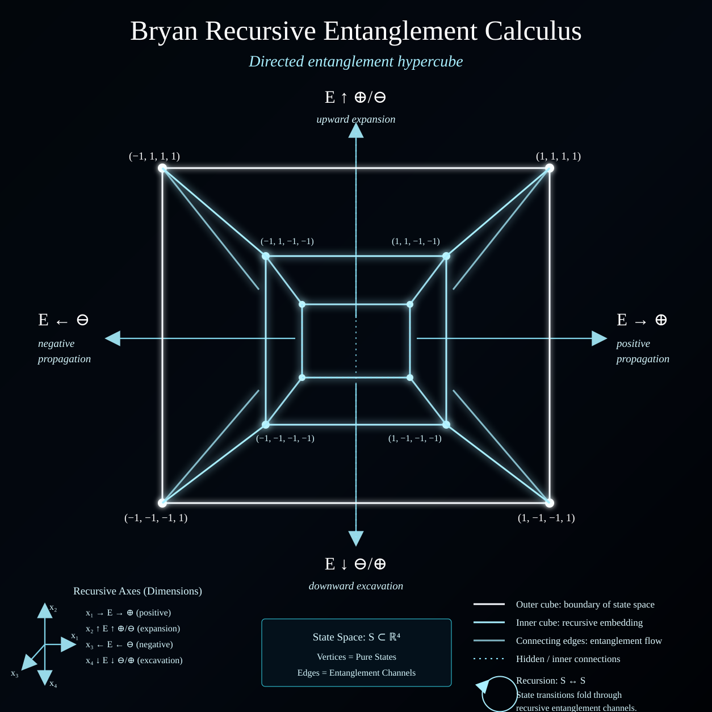

Frozen: BREC v1.0 is the canonical binary recursive specification. Future work may extend it through explicit versioning, but must not silently alter the v1.0 core.
{kind=link}

The idea
The Bryan Entanglement Cross is an eight-ray visual seed. BREC removes the eight-direction ceiling by representing every finite constructive or obstructive consequence history as a word over the signed alphabet {+, −}. Direction becomes a visualization of history rather than the mathematical object itself.
The word entanglement here denotes an abstract dependency and propagation structure. BREC does not by itself assert a model of quantum entanglement or any empirical physical phenomenon. Applications must define their own states, operators, signs, weights, and observations.
Frozen recursion
At depth n there are exactly 2^n formal histories and 2^(n+1) − 1 histories through depth n. Evaluated states may collide, so BREC explicitly distinguishes history identity from state identity.
The original Cross inside BREC
The Cross is therefore a mixed-depth selection from the full recursive history space. It is not the whole third layer. BREC also contains, for example, +++, +−+, −+−, and −−−.
The alternating histories +−+ and −+− are re-entrant: a consequence reverses and then reverses again. Recursion makes these and arbitrarily deeper reversals unavoidable formal possibilities.
Canonical history invariants
For w = (s₁,…,sₙ) with each sᵢ ∈ {−1,+1}, BREC v1.0 records:
A canonical descriptive signature is:
Finite-history completeness
Every finite sequence of binary consequences corresponds to exactly one formal history word in Σ₂*. Thus the history tree is exhaustive for finite binary sign histories, including persistence, single reversal, re-entry, multiple reversal, arbitrary alternation, terminal branches, and state collisions once application semantics are supplied.
Beyond eight directions
At each fixed depth, histories may be projected to 2^n rays on a circle. The more natural finite geometry is the signed hypercube {−1,+1}^n, in which every history is one vertex and recursion appends either +1 or −1 as a new coordinate.
The binary system also generalizes to any finite property alphabet Σₘ = {p₁,…,pₘ}:
Canonical statement
An entanglement is not assigned one of eight directions. An entanglement generates a recursively closed space of directed consequences, and every finite sequence of constructive and obstructive propagation is itself a legitimate formal entanglement history.
Research program
BREC research includes collision theory, normal forms, metrics on history space, topology of infinite branches, dynamical operator composition, stochastic branch measures, information and entropy, causal embeddings, free-monoid quotients, higher alphabets, history-preserving pruning, and domain-specific certificate rules.
Canonical source
This page is the public summary. The repository specification contains the normative definitions, algorithms, qualifications, symmetry operations, stochastic extension, generalized recursion, research agenda, and versioning rule.